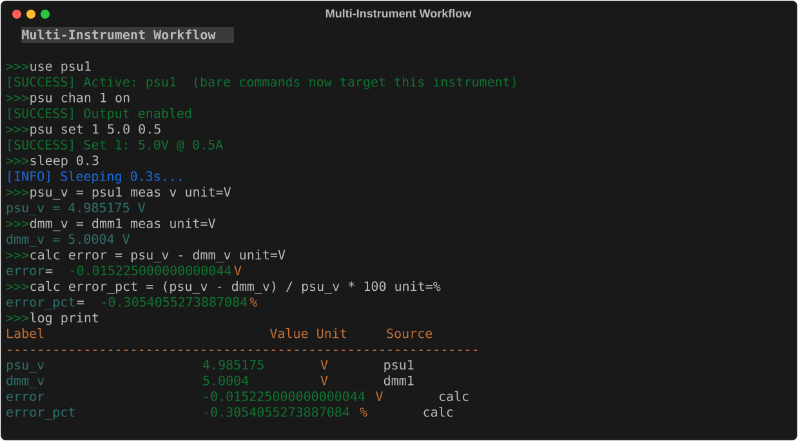

Example Workflows¶
These bundled examples demonstrate common lab measurement workflows. Load any example into your session and run it, or use it as a starting point for your own scripts.

examples # list all bundled examples
examples load <name> # load a specific example
examples load all # load all examples at once
script run <name> [params] # run a loaded example
psu_dmm_test¶
Set PSU to a voltage, measure with DMM, log result.
This is the simplest useful workflow: power a DUT at a target voltage and record what the DMM actually measures.
Parameters:
| Parameter | Default | Description |
|---|---|---|
voltage |
5.0 |
Target PSU voltage in volts. |
label |
vtest |
Label for the DMM measurement in the log. |
Load and run:
examples load psu_dmm_test
script run psu_dmm_test voltage=5.0 label=vtest
script run psu_dmm_test voltage=3.3 label=v3v3
What it does:
- Turns on PSU channel 1
- Sets the voltage to
{voltage}V - Waits 500 ms for the output to settle
- Records the PSU's measured output as
psu_v - Takes a DC voltage reading from the DMM, records as
{label} - Prints the log
Script source:
# psu_dmm_test
voltage = 5.0
label = vtest
print "=== PSU/DMM Voltage Test ==="
print "Target: {voltage}V"
psu1 chan 1 on
psu1 set 1 {voltage}
sleep 0.5
psu_v = psu1 meas v unit=V
dmm1 config vdc
{label} = dmm1 meas unit=V
print "=== Test complete ==="
log print
Interpreting results:
After running, log print shows:
Compute the error between PSU setpoint and DMM reading:
voltage_sweep¶
Sweep PSU through a list of voltages, log DMM reading at each step.
Tests how a DUT responds across a range of supply voltages.
Load and run:
What it does:
- Turns on PSU channel 1
- For each voltage in the list: sets PSU → waits 500 ms → records DMM reading
- Turns off PSU
- Prints and saves the log to
voltage_sweep.csv
Default voltage list: 1.0 2.0 3.3 5.0 9.0 12.0
To change the voltage list: load the example, then script edit voltage_sweep and modify the for line.
Script source:
# voltage_sweep
print "=== Voltage Sweep ==="
psu1 chan 1 on
sleep 0.3
dmm1 config vdc
for v 1.0 2.0 3.3 5.0 9.0 12.0
print "Setting {v}V..."
psu1 set 1 {v}
sleep 0.5
v_{v} = dmm1 meas unit=V
end
psu1 chan 1 off
print "=== Sweep complete ==="
log print
log save voltage_sweep.csv
Analyzing results:
After running, each voltage step is recorded as v_1.0, v_2.0, v_3.3, etc. You can compute differences:
awg_scope_check¶
Output a sine wave on AWG ch1, measure frequency and PK2PK on the scope.
A basic signal integrity check — verify the AWG is outputting what you expect.
Parameters:
| Parameter | Default | Description |
|---|---|---|
freq |
1000 |
Target frequency in Hz. |
amp |
2.0 |
Target amplitude in Vpp. |
Load and run:
examples load awg_scope_check
script run awg_scope_check freq=1000 amp=2.0
script run awg_scope_check freq=10000 amp=1.0
What it does:
- Enables AWG channel 1
- Configures a sine wave at
{freq}Hz,{amp}Vpp - Waits 500 ms for signal to stabilize
- Runs
scope autosetto auto-configure the scope - Waits 1 s for autoset to settle
- Records: frequency measurement from the scope
Script source:
# awg_scope_check
freq = 1000
amp = 2.0
print "=== AWG + Scope Signal Check ==="
print "Frequency: {freq} Hz Amplitude: {amp} Vpp"
awg1 chan 1 on
awg1 wave 1 sine freq={freq} amp={amp} offset=0
sleep 0.5
scope1 autoset
sleep 1.0
meas_freq = scope1 meas 1 FREQUENCY unit=Hz
print "=== Results ==="
log print
Check accuracy:
freq_sweep¶
Sweep AWG through a list of frequencies, scope measures each.
Characterize frequency response — useful for testing filters, amplifiers, and signal paths.
Load and run:
What it does:
- Enables AWG ch1, sets sine wave with fixed amplitude
- For each frequency in the list: sets frequency → waits 400 ms → records scope measurement
- Disables AWG
- Prints and saves log to
freq_sweep.csv
Default frequency list: 100 500 1000 5000 10000 50000 100000 (Hz)
Script source:
# freq_sweep
print "=== Frequency Sweep ==="
awg1 chan 1 on
awg1 wave 1 sine amp=2.0 offset=0
sleep 0.3
for f 100 500 1000 5000 10000 50000 100000
print "Testing {f} Hz..."
awg1 freq 1 {f}
sleep 0.4
freq_{f} = scope1 meas 1 FREQUENCY unit=Hz
end
awg1 chan 1 off
print "=== Sweep complete ==="
log print
log save freq_sweep.csv
Computing gain:
If you're testing a filter or amplifier, measure the input and output simultaneously:
# Modify the loop to capture both channels:
for f 100 500 1000 5000 10000 50000
awg1 freq 1 {f}
sleep 0.4
in_{f} = scope1 meas 1 PK2PK unit=V
out_{f} = scope1 meas 2 PK2PK unit=V
calc gain_{f} {out_{f}} / {in_{f}}
end
psu_ramp¶
Ramp PSU voltage from start to end in N equal steps.
Useful for gradually bringing up power to a DUT and logging the response at each step.
Parameters:
| Parameter | Default | Description |
|---|---|---|
v_start |
0 |
Starting voltage. |
v_end |
12.0 |
Ending voltage. |
steps |
7 |
Number of steps (informational — edit the for line to change the actual list). |
delay |
0.5 |
Seconds to wait at each step. |
Load and run:
Script source:
# psu_ramp
v_start = 0
v_end = 12.0
steps = 7
delay = 0.5
print "=== PSU Voltage Ramp ==="
print "{v_start}V -> {v_end}V in {steps} steps"
psu1 chan 1 on
for v {v_start} 2.0 4.0 6.0 8.0 10.0 {v_end}
print "Ramping to {v}V"
psu1 set 1 {v}
sleep {delay}
ramp_{v} = psu1 meas v unit=V
end
print "=== Ramp complete ==="
log print
Customizing the step list
The for loop hardcodes the voltage steps (2.0 4.0 6.0 ...). To change the actual step values, load the example with examples load psu_ramp, then script edit psu_ramp and modify the for line directly.
Live Plot Examples¶
These examples use liveplot to visualize data in real time as it's collected. All work with --mock. See Plotting for full details on the plotting system.
Every example below has both a .scpi and .py version. Import either from the GUI menu (Examples > SCPI Scripts or Examples > Python Scripts).
live_voltage_sweep¶
Sweep PSU voltages with a live plot tracking DMM readings.
Uses linspace to generate 51 evenly-spaced voltage steps from 0.5 V to 12 V.
The live plot shows DMM readings appearing point-by-point as the sweep progresses.
Script source:
# live_voltage_sweep
# Sweeps PSU through voltages while a live plot shows DMM measurements
# in real time. Works with --mock.
print "=== Live Voltage Sweep ==="
# Start live plot BEFORE collecting data
liveplot dmm_* --title "Voltage Sweep" --xlabel "Time (s)" --ylabel "Voltage (V)"
psu1 chan 1 on
dmm1 config vdc
sleep 0.3
# Use linspace for many points so the plot updates visibly
sweep_voltages = linspace 0.5 12.0 50
for v {sweep_voltages}
print "Setting {v}V..."
psu1 set 1 {v}
sleep 200ms
dmm_{v}V = dmm1 meas unit=V
end
psu1 chan 1 off
print "=== Sweep complete ==="
log print
live_multi_plot¶
Two live plots: PSU voltage + current during a ramp.
Opens two separate tabs — one for voltage, one for current — by running two liveplot commands.
Script source:
# live_multi_plot
# Opens two independent live plots -- one for voltage, one for current.
# Watch both update in real time as the PSU ramps. Works with --mock.
print "=== Multi-Plot PSU Ramp ==="
# Open two live plots (each gets its own tab)
liveplot psu_v_* --title "PSU Voltage" --xlabel "Time (s)" --ylabel "Voltage (V)"
liveplot psu_i_* --title "PSU Current" --xlabel "Time (s)" --ylabel "Current (A)"
psu1 chan 1 on
sleep 0.3
ramp_voltages = linspace 0.5 12.0 50
for v {ramp_voltages}
print "Ramping to {v}V..."
psu1 set 1 {v}
sleep 250ms
psu_v_{v} = psu1 meas v unit=V
psu_i_{v} = psu1 meas i unit=A
end
psu1 chan 1 off
print "=== Ramp complete ==="
log print
live_combined_plot¶
PSU voltage + current overlaid on ONE chart.
Same data as live_multi_plot, but uses a single liveplot command with two glob patterns to overlay both series on one chart.
Script source:
# live_combined_plot
# Plots voltage AND current as two series on a single chart.
# Multiple glob patterns on one liveplot = multiple series, one chart.
# Works with --mock.
print "=== Combined V+I Live Plot ==="
# Two patterns on ONE liveplot = two series on one chart
liveplot psu_v_* psu_i_* --title "PSU Voltage & Current" --xlabel "Time (s)"
psu1 chan 1 on
sleep 0.3
ramp_voltages = linspace 0.5 12.0 50
for v {ramp_voltages}
print "Ramping to {v}V..."
psu1 set 1 {v}
sleep 200ms
psu_v_{v} = psu1 meas v unit=V
psu_i_{v} = psu1 meas i unit=A
end
psu1 chan 1 off
print "=== Ramp complete ==="
log print
The key difference:
# Two tabs (live_multi_plot):
liveplot psu_v_* --title "Voltage"
liveplot psu_i_* --title "Current"
# One chart, two series (live_combined_plot):
liveplot psu_v_* psu_i_* --title "PSU Voltage & Current"
live_freq_sweep¶
Live plot of scope frequency measurements during AWG sweep.
Sweeps AWG through 16 frequencies from 100 Hz to 100 kHz.
Script source:
# live_freq_sweep
# Sweeps AWG frequencies while a live plot tracks scope measurements.
# Works with --mock.
print "=== Live Frequency Sweep ==="
liveplot freq_* --title "Frequency Response" --xlabel "Time (s)" --ylabel "Frequency (Hz)"
awg1 chan 1 on
awg1 wave 1 sine amp=2.0 offset=0
sleep 0.3
for f 100 200 500 750 1000 2000 3000 5000 7500 10000 15000 20000 30000 50000 75000 100000
print "Testing {f} Hz..."
awg1 freq 1 {f}
sleep 250ms
freq_{f} = scope1 meas 1 FREQUENCY unit=Hz
end
awg1 chan 1 off
print "=== Sweep complete ==="
log print
Scripting & Control Flow Examples¶
These examples demonstrate the REPL's control flow features: conditionals, loops, assertions, and cross-script Python interop. All work with --mock.
conditional_psu_check¶
if/elif/else: check PSU voltage is in range and print status.
Script source:
# conditional_psu_check
# Demonstrates if/elif/else conditional branching.
# Works in --mock mode (mock PSU returns ~5.0 V).
psu1 chan 1 on
psu1 set 1 5.0
sleep 0.3
psu_v = psu1 meas v unit=V
if psu_v > 5.1
print "[WARN] Overvoltage: {psu_v} V"
elif psu_v < 4.9
print "[WARN] Undervoltage: {psu_v} V"
else
print "[PASS] Voltage in range: {psu_v} V"
end
psu1 chan 1 off
assert_limits¶
assert: verify PSU voltage is within hard safety bounds.
Script source:
# assert_limits
# Demonstrates assert statements for safety-limit checking.
# Works in --mock mode (mock PSU returns ~5.0 V).
upper_limit psu1 voltage 5.5
psu1 chan 1 on
psu1 set 1 5.0
sleep 0.3
v = psu1 meas v unit=V
assert v > 0.0 "Voltage must be positive"
assert v < 6.0 "Voltage must be below 6 V"
print "[PASS] Assertions passed — measured {v} V"
psu1 chan 1 off
while_counter¶
while: take 5 PSU voltage samples with a counter and compute average.
Script source:
# while_counter
# Demonstrates while loop with += counter and average calculation.
# Works in --mock mode (mock PSU returns ~5.0 V).
count = 0
total = 0.0
psu1 chan 1 on
psu1 set 1 5.0
sleep 0.2
while count < 5
count += 1
sample = psu1 meas v unit=V
total = total + sample
print "Sample {count}: {sample} V"
sleep 100ms
end
avg = total / count unit=V
print "Average over {count} samples: {avg} V"
psu1 chan 1 off
log print
syntax_reference¶
Full syntax tour: variables, calc, if/elif/else, while, assert, check, boolean ops.
Script source:
# syntax_reference
# A complete tour of all REPL scripting features.
# Works in --mock mode -- no real instruments required.
# -- Variables & expressions --
x = 10
y = 3
z = x * y + 1 # arithmetic: z = 31
name = "voltage" # string assignment
ratio = x / y # float division
bits = 0xFF & 0x0F # bitwise AND
shifted = 1 << 4 # left shift: 16
# -- Augmented assignment & increment/decrement --
count = 0
count += 1 # count = 1
count += 1 # count = 2
count -= 1 # count = 1
count++ # count = 2
count-- # count = 1
print "count = {count}"
# -- Ternary expression --
label = x > 5 if x > 5 else 0 # ternary: 10 > 5 → True
category = 10 if x > 5 else 0 # proper ternary: 10
print "category = {category}"
# -- Math functions & constants --
sq = sqrt(x) # sqrt(10)
lg = log10(1000) # 3.0
angle = degrees(pi) # 180.0
print "sqrt(10) = {sq} log10(1000) = {lg} 180deg = {angle}"
# -- Computed assignment with unit logging --
a = 5.0
b = 2.0
power = a * b unit=W # power stored in log with unit W
error_pct = (a - b) / b * 100 unit=%
print "power = {power} W error_pct = {error_pct} %"
# -- calc keyword (alternative form) --
calc gain = a / b # equivalent to: gain = a / b
print "gain = {gain}"
# -- if / elif / else --
voltage = 5.05
if voltage > 5.1
verdict = "OVER"
elif voltage < 4.9
verdict = "UNDER"
else
verdict = "OK"
end
print "Voltage {voltage} V → {verdict}"
# -- assert (hard stop -- script aborts on failure) --
assert voltage > 0.0 "voltage must be positive"
assert voltage < 6.0 "voltage below safety limit"
print "[PASS] Both asserts passed"
# -- check (soft -- records PASS/FAIL, continues) --
check voltage > 4.9 "above lower bound"
check voltage < 5.1 "below upper bound"
check voltage > 100 "this will fail but script continues"
# -- while loop --
i = 0
total = 0
while i < 5
i += 1
total += i
print " iter {i}: total = {total}"
end
print "Sum 1..5 = {total}"
# -- while with break/continue --
j = 0
while j < 20
j++
if j == 3
continue # skip 3
end
if j > 6
break # stop at 6
end
end
print "j stopped at {j}"
# -- for loop --
for v 1.0 2.0 3.3 5.0
print " for: v = {v}"
end
# -- Boolean operators (and / or / not / && / ||) --
ok = voltage > 4.9 and voltage < 5.1
also_ok = voltage > 4.9 && voltage < 5.1 # && is alias for and
print "In spec (and): {ok} In spec (&&): {also_ok}"
# -- log report (shows check results) --
log report
log print
cross_script_demo¶
Single SCPI script that collects data then calls Python for analysis.
Script source:
# cross_script_demo
# Collects PSU/DMM measurements, then calls Python inline for analysis.
# REPL variables are auto-injected into the Python script as native types.
# Works with --mock.
print "=== Cross-Script Demo ==="
target = 5.0
tolerance = 0.05
psu1 chan 1 on
dmm1 config vdc
psu1 set 1 {target}
sleep 0.3
# Collect 10 readings at the target voltage
for i 1 2 3 4 5 6 7 8 9 10
reading_{i} = dmm1 meas unit=V
sleep 100ms
end
psu_v = psu1 meas v unit=V
psu1 chan 1 off
# Call Python for analysis -- target, tolerance, psu_v are auto-available
python cross_script_demo.py
log print
print "Analysis complete. See variables: mean_v, std_dev, error_pct"
complete_cross_script¶
Comprehensive showcase: every instrument, loop, syntax feature, and all 20 Python/SCPI interop patterns.
Script source:
# complete_cross_script
# Comprehensive REPL feature showcase.
# Demonstrates EVERY scripting feature, instrument command,
# and all 10 SCPI-context Python interop patterns (1-10).
#
# Run with: examples load complete_cross_script
# script run complete_cross_script
#
# Then run the Python analysis phase:
# python examples/Cross Script/complete_cross_script.py
#
# Works with --mock mode.
#
# Full source: examples/Cross Script/complete_cross_script.scpi
print "=== Complete Cross Script — REPL Feature Showcase ==="
# -- Setup --
set +e
target = 5.0
tolerance = 0.05
# -- PSU sweep with glob-friendly labels --
psu1 chan 1 on
for v 1.0 2.0 3.3 5.0 9.0 12.0
psu1 set 1 {v}
sleep 100ms
psu_sweep_{v} = psu1 meas v unit=V
end
psu1 chan 1 off
# -- DMM readings in a loop (glob: dmm_reading_*) --
dmm1 config vdc
for i 1 2 3 4 5
dmm_reading_{i} = dmm1 meas unit=V
sleep 50ms
end
# -- Glob pattern plots --
plot psu_sweep_* --title "PSU Sweep"
plot dmm_reading_* --title "DMM Readings"
# -- Python interop patterns (1, 3, 5, 7, 9 shown inline) --
# PATTERN 1: pyeval inline
pyeval 6 * 7
print "Pattern 1: 6*7 = {_}"
# PATTERN 3: pyeval in a loop
for n 1 2 3
pyeval {n} ** 2
print " {n}^2 = {_}"
end
# PATTERN 5: SCPI var read by pyeval
scpi_greeting = hello_world
pyeval vars['scpi_greeting'].upper()
print "Pattern 5: {_}"
# PATTERN 7: SCPI var modified by pyeval
modify_me = 10
pyeval float(vars['modify_me']) * 3 + 7
modify_me = {_}
print "Pattern 7: modify_me = {modify_me}"
# PATTERN 9: pyeval creates value for SCPI
pyeval 2 ** 10
pyeval_result = {_}
print "Pattern 9: pyeval_result = {pyeval_result}"
# Patterns 2, 4, 6, 8, 10 require helper file --
# see full script: examples/Cross Script/complete_cross_script.scpi
log print
print "=== SCPI phase complete ==="
Building your own¶
Use these examples as templates. The general pattern for any measurement script is:
# 1. Set defaults (overridable at run time)
voltage = 5.0
label = my_test
delay = 0.5
# 2. Operator setup
print "=== My Test ==="
pause Connect hardware, then press Enter
# 3. Configure instruments
psu1 chan 1 on
psu1 set 1 {voltage}
sleep {delay}
# 4. Measure and store
psu_out = psu1 meas v unit=V
dmm1 config vdc
dmm_out = dmm1 meas unit=V
# 5. Derived calculations
calc error {dmm_out} - {psu_out} unit=V
# 6. Export
log print
log save {label}_results.csv
# 7. Safe state
psu1 chan 1 off
See Scripting for the complete directive reference.